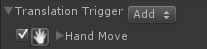
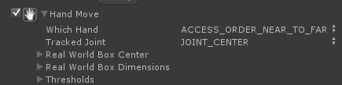

Translation Trigger and Rules |
Top Previous Next |
|
Translation Trigger and Trigger Values The Translation Trigger indicates that the user performed a translation interaction.
Translation Trigger Rules  The following rules work with the Translation Trigger:
 The rule fires whenever the user’s hand moves. Similarly as in the Hand Tracking rule, you can specify the tracked hand and joint together with the Real World Box. In addition, the developer can specify the Thresholds which define the minimal movement that the user needs to move his joint in order to fire this rule. The thresholds help to prevent false movement. Continuous tracking overrides the hand index and tracks the same hand regardless whether other hands show or disappear during the run. For example, a right hand (index=0) is visible to the camera and is in tracking. The index may be changed to other values. But the tracking will continue on the same right hand.
|